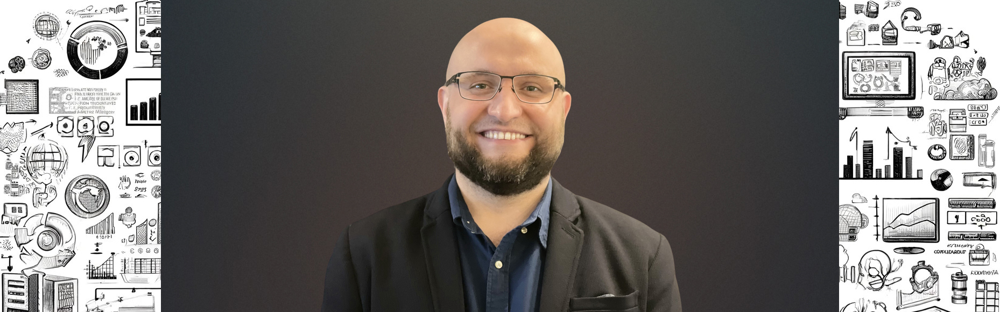
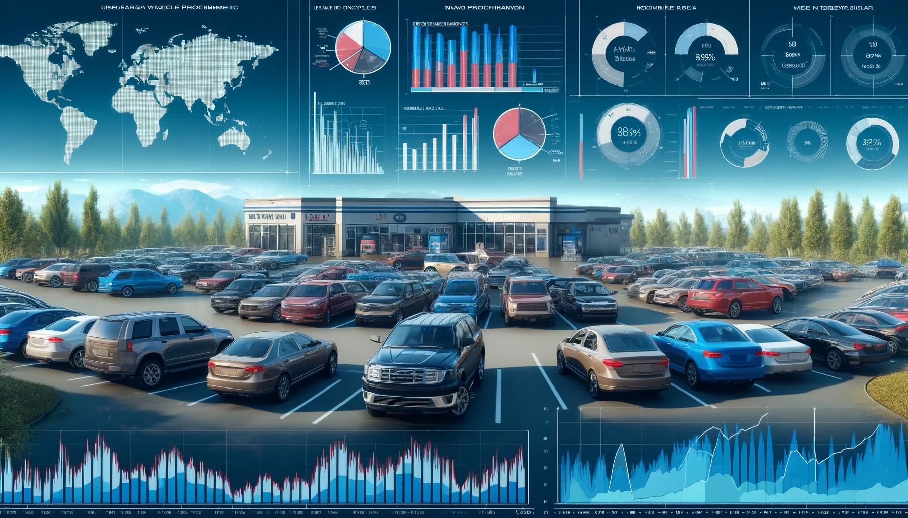
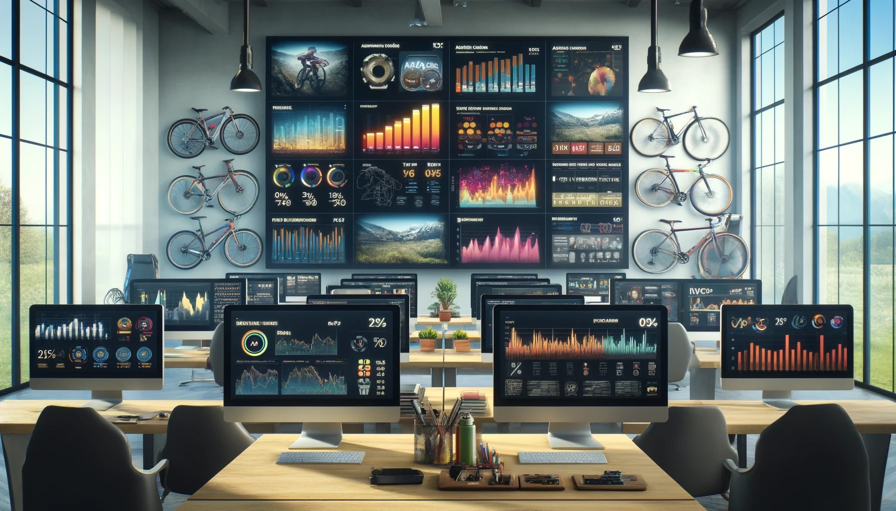
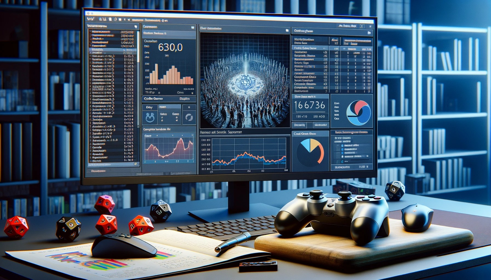

I Help Organizations Unlock Their Data Potential To Drive Sustainable Growth.
With 3 years of experience working in data analytics, utilizing SQL, Power BI, Python, and Excel, and over 12 years of hands-on experience managing projects up to $200.000, I possess the ability to bridge the gap between technical and non- technical teams, consistently delivering successful results, even in the most challenging projects.

Throughout my career, I assisted leading organizations, such as Epson, in leveraging large amounts of internal and external data to achieve sustainable business growth of up to 30%.
I hold a Bachelor's degree in Physics and a Master's degree in Management, along with a PMP certification and the Google Data Analytics Professional Certificate, reflecting my commitment to continuous learning and professional development.
I am passionate about connecting with new people and open to new collaboration opportunities, so feel free to reach out!

This project analyzes used vehicle sales data in the USA, focusing on the first half of 2015. Utilizing Python and Pandas, the project cleans and organizes data from car_prices.csv into four dataframes: fact_sales, Seller_IDs, Vehicle_conditions, and VIN_details, which are then saved as CSV files. These files serve as the foundation for a comprehensive 3-page report created in Power BI, detailing sales by vehicle attributes and sellers.

AdventureWorks Cycles is a leading manufacturing company focused on delivering high-quality bicycles and related accessories. This project involves the role of a Business Intelligence Analyst aimed at transforming raw data into insightful, professional-quality reports and dashboards. These tools will track KPIs, compare regional performance, analyze product-level trends, and identify high-value customers.

This project analyzes the retail prices of fruits and vegetables in different regions of the USA using a Jupyter Notebook and the following Python libraries:pandas, matplotlib, seaborn. The notebook contains the following sections: Loading the dataset containing retail prices of fruits and vegetables; Cleaning and preparing the data for analysis; Exploring and analyzing the retail prices data; Visualizing the data using plots and charts.

The main project's focus is to analyze the trends in game sales across different regions and the relationship between sales and user reviews. The analysis includes: Handling missing values and formatting data types; Exploring the distribution of sales and reviews across different regions and platforms; Creating visualizations to illustrate the findings; Summarizing the insights and conclusions drawn from the analysis.